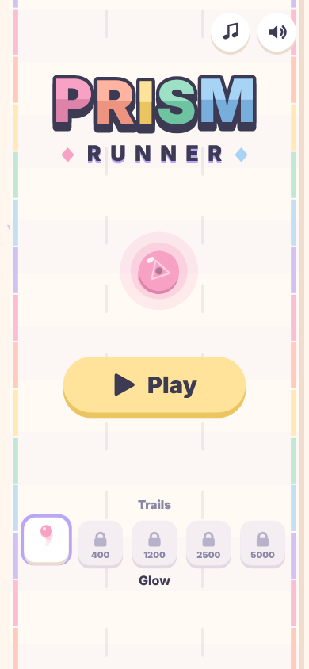
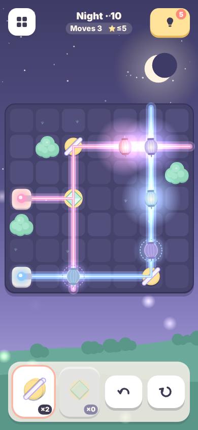
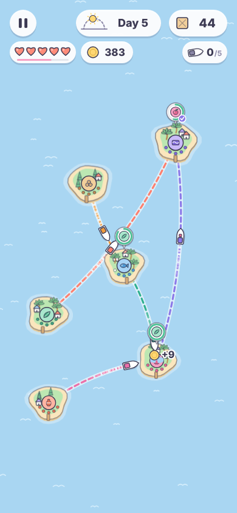
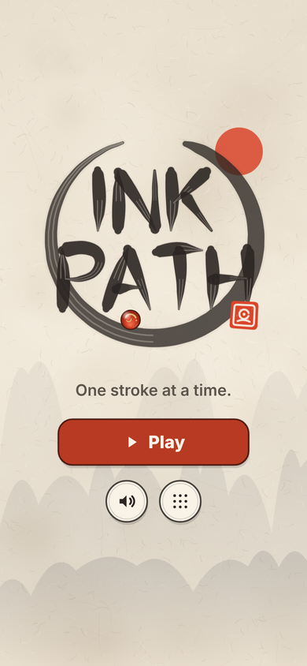
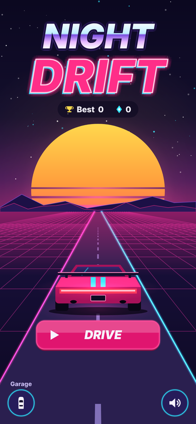
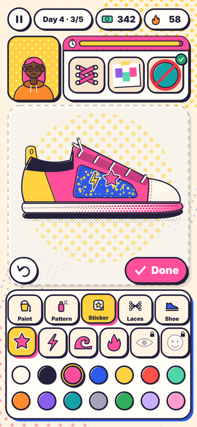
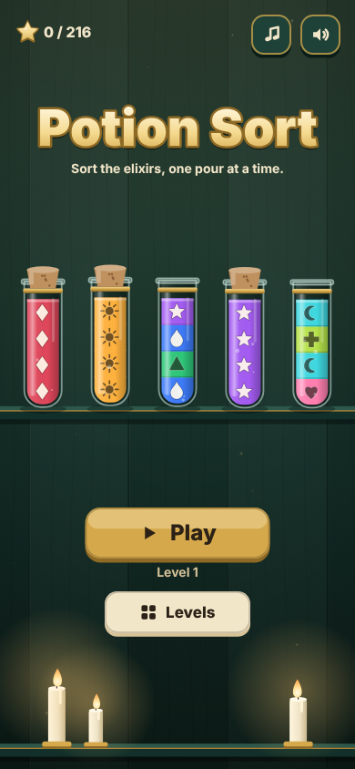
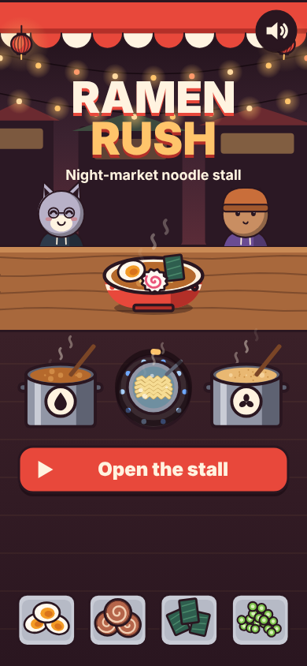
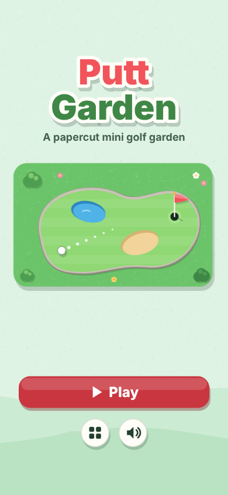

Playables Collection
Nine original games made for YouTube Playables: an arcade runner, a light puzzle, a cozy ferry sim, an ink-brush physics puzzle, a neon drift racer, a sneaker design studio, a potion-sorting puzzle, a noodle-stall rush and a papercut mini golf. They play in the browser on phone or desktop, with touch, mouse or keyboard.

Prism Runner
Swipe between three lanes and change color to slip through matching gates. It keeps getting faster. Chase combos, collect shields and unlock trails.
Play ▸
Lantern Links
Rotate and place mirrors to guide beams of light to every paper lantern. 30 handcrafted levels across three chapters, with color mixing and prisms.
Play ▸
Island Ferry
Draw ferry routes across a pastel archipelago and deliver the goods each island asks for before its patience runs out. Pick upgrades between days.
Play ▸
Ink Path
Draw brushstrokes on rice paper and guide a lacquered marble into a celadon bowl. 36 calm sumi-e levels with mist, wind, bamboo springs and swinging lanterns. Less ink earns more seals.
Play ▸
Night Drift
Hold to drift, release to straighten. A one-finger synthwave racer on an endless neon highway. Chain clean drifts for combo, fire boosts and unlock paint jobs and light trails.
Play ▸
Kicks Lab
Run a tiny riso-print sneaker studio. Read icon order cards, then paint, spray and sticker original kicks to earn hype stamps and unlock new inks, patterns and silhouettes.
Play ▸
Potion Sort
Pour layered elixirs between flasks until each holds a single color. 72 levels on six apothecary shelves, with hidden layers and sealed flasks. Every color has its own rune.
Play ▸
Ramen Rush
Run a night-market noodle stall. Boil noodles, ladle broth and add toppings to match icon orders before customers lose patience, then upgrade your stall between nights.
Play ▸
Putt Garden
Drag back and putt across 27 papercut mini golf holes on three courses, with slopes, sand, water, windmills and teleport pipes. Sink it under par for three stars.
Play ▸